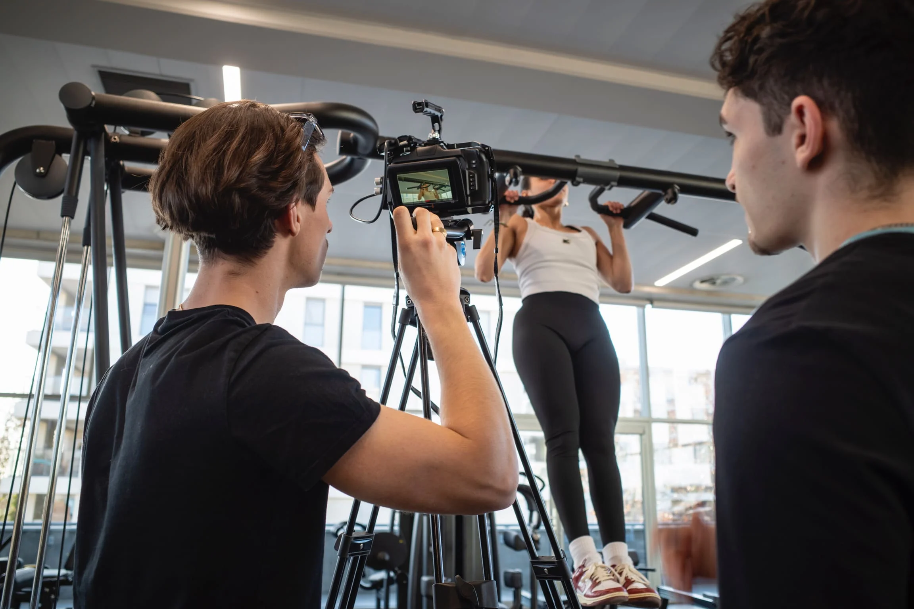
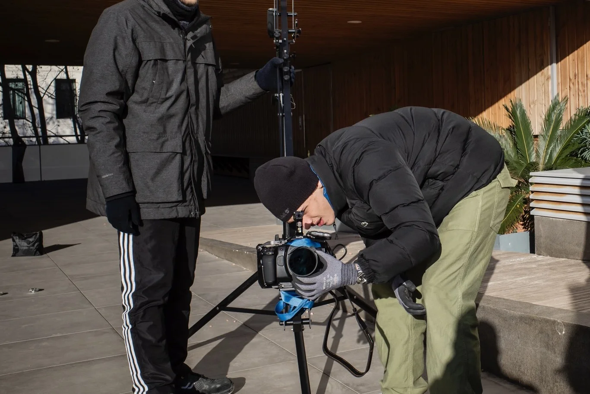
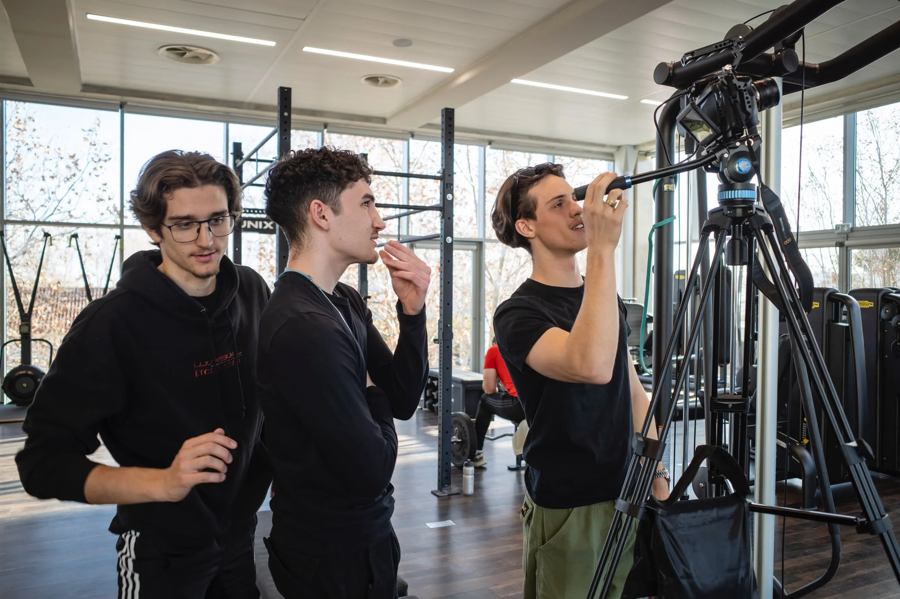

Athletic Fitness Club
Making Of



À propos du projet
Un club de sport, c'est fait de gens en mouvement. Des corps qui poussent, qui transpirent, qui progressent. Ce n'est pas souvent ce qu'on voit dans les films de fitness. Nous, c'est ce qu'on a filmé. Deux jours dans la salle, avec les adhérents présents, pour que le film montre la vérité du lieu. Pas une version idéalisée : l'endroit tel qu'il est, pour que ceux qui le regardent aient envie d'en faire partie.
Équipe Technique
Athletic Fitness Club : du brief au résultat
01 — Objectif
Donner envie. Athletic Fitness Club voulait un film qui montre son énergie et la diversité de ses espaces, pour convaincre les futurs adhérents avant même leur première visite.
02 — Contrainte
Budget maîtrisé et tournage sur seulement 2 jours, en heures d'ouverture, avec la présence d'adhérents dans les espaces. Nécessité de montrer l'ensemble des zones (musculation, cardio, cours collectifs) sans perturber l'activité.
03 — Choix Créatifs
Étalonnage naturel pour une image qui ne ment pas sur l'ambiance du club. Deux rythmes de montage distincts : l'un posé pour les zones de récupération, l'autre tendu pour les moments d'effort, pour rendre compte de la diversité du lieu sans en faire trop.
04 — Dispositif Technique
- Durée : 2 jours de tournage
- Équipe : 4 techniciens (réalisateur, chef opérateur, machiniste, chargé de production)
- Matériel : Boîtiers Lumix, Grue, éclairage LED
- Post-production : Montage, étalonnage, mixage audio
05 — Livrables
- 1 film publicitaire principal (1 minute)
- Déclinaisons courtes pour les réseaux sociaux (stories, reels)
- Fichiers optimisés pour diffusion web et écrans d'accueil en salle
📈 Impact & Résultats
Le film tourne en boucle sur les écrans du club et alimente leurs campagnes sociales. Un outil qui travaille à leur place, chaque jour, dans la salle et en dehors.
Une salle de sport indépendante face aux chaînes nationales
Athletic Fitness Club est une salle de sport indépendante implantée dans le Vaucluse. Sur un marché dominé par les chaînes nationales (Basic-Fit, Fitness Park, Keepcool), une salle indépendante a un seul vrai avantage à mettre en avant : la qualité humaine. Coachs présents, communauté qui se connaît, encadrement personnalisé.
Le brief : un film institutionnel qui fasse comprendre, en moins de deux minutes, que rejoindre cette salle ne ressemble pas à rejoindre une chaîne. Que ce qui s'y passe, c'est de l'humain, pas de l'infrastructure.
Filmer une salle de sport sans la rendre identique à toutes les autres
Toutes les salles de sport ont les mêmes équipements : tapis de course, presses à jambes, machines guidées, espace musculation, espace cours collectifs. Si on filme l'équipement, on a fait le film de n'importe quelle salle. Le défi : montrer ce qui se passe entre les machines, pas les machines elles-mêmes.
Autre contrainte : on tournait en horaires d'ouverture. Pas de salle vide, pas de cours mis en scène. Les vrais adhérents s'entraînaient pendant qu'on filmait. Il fallait obtenir des plans construits sans perturber la séance d'entraînement de personne.
Filmer les regards, les pauses, les conversations entre séries
Plan de tournage construit autour de quatre axes humains : le coach qui corrige une posture, deux adhérents qui rient en finissant une série, l'accueil qui retient le prénom d'un nouvel arrivant, le silence concentré d'une fin de séance. L'équipement apparaît, mais il est toujours en arrière-plan d'un visage ou d'un geste.
Choix d'image : caméra à hauteur d'épaule (pas de plans aériens, pas de slider), mouvements lents pour ne pas perturber les adhérents, optiques fixes 35mm et 50mm pour rester proche des corps sans entrer dans leur espace. Étalonnage neutre, sans dramatisation. On voulait une image qui ressemble à ce qu'on voit en franchissant la porte, pas à un clip publicitaire.
Une demi-journée pendant les heures de pointe
Tournage concentré sur une demi-journée, pendant les heures où la salle est la plus fréquentée (18h-21h, créneau après-travail). Annonce préalable des adhérents par mail : ceux qui ne voulaient pas être filmés pouvaient s'identifier et nous évitions de cadrer leur zone. Personne ne s'est désisté.
Setup : un seul opérateur en mouvement libre dans la salle, un assistant qui gérait les autorisations en direct (signature de droits à l'image). Pas d'éclairage additionnel (l'éclairage de la salle est suffisant pour les optiques rapides). Captation son d'ambiance pour le mixage final, pas d'interview synchrone.
Un film de 1 minute 30, en site et en réseaux sociaux
Film final : 1 minute 30, format 16/9 et déclinaison 9/16 verticale. Diffusion sur la page d'accueil du site Athletic Fitness Club, en posts Instagram et Facebook au moment des campagnes de rentrée (septembre, janvier), en boucle sur l'écran d'accueil de la salle. Durée de vie estimée : 2 à 3 ans (avant que le casting visuel ne commence à dater).
Le film a aussi servi de support pour la campagne de prospection commerciale : envoyé en lien dans les emails de premier contact aux entreprises locales pour proposer des partenariats sport-entreprise.
Pour ce type de vidéo corporate dans le Vaucluse avec tournage en lieu actif et plusieurs intervenants, le budget se situe entre 2 500 € et 5 000 €.
Un projet similaire en tête ? Vous gérez une salle, un commerce, un lieu actif que vous voulez raconter en image ? Parlons-en en 15 minutes.


Vous souhaitez un film similaire ?
Dites-nous ce que vous voulez construire. On vous dit comment on peut le faire.
Parlons-en